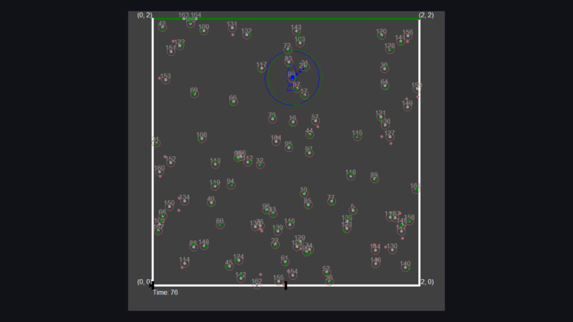
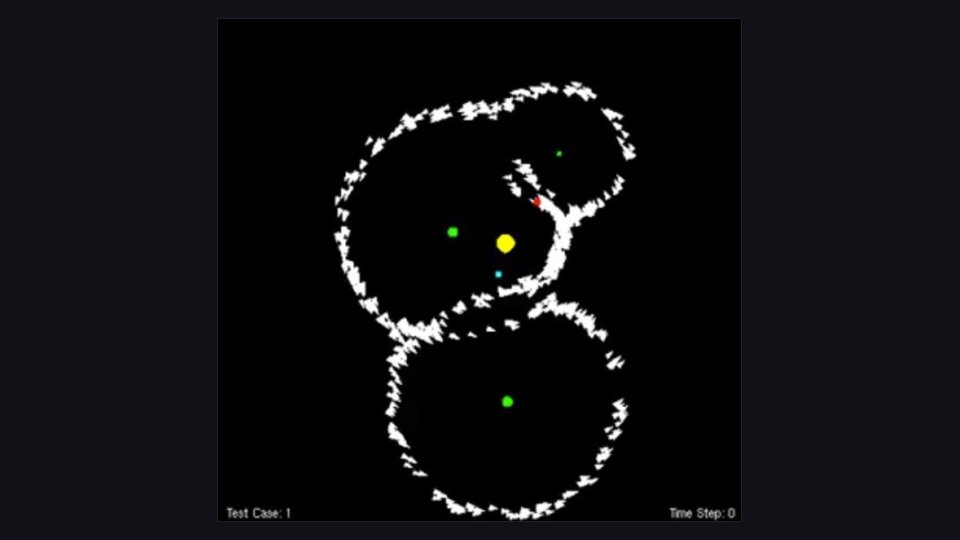
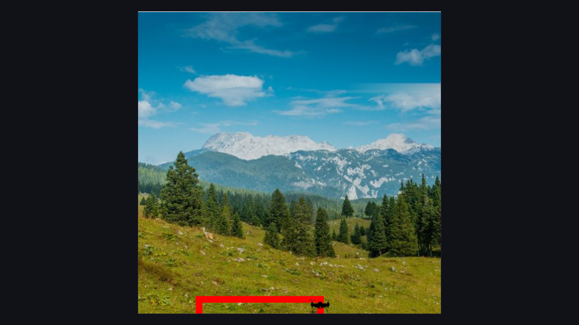
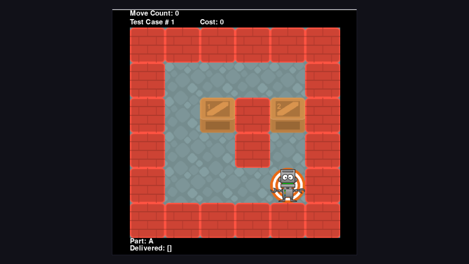
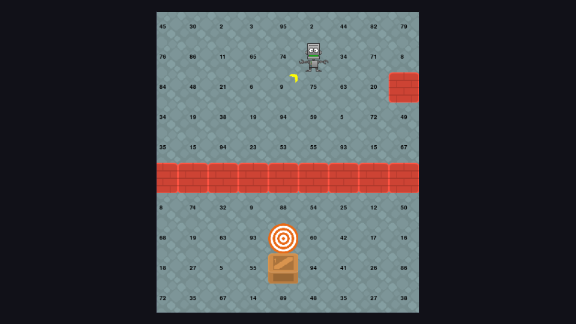
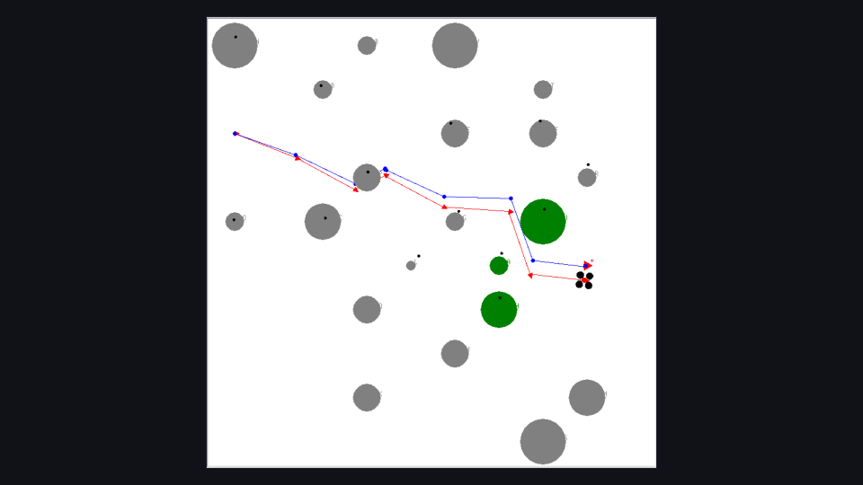

Hopscotch: Kalman Filters (2026)
Multi-target tracking under sensor noise. One Kalman filter per asteroid, estimating unobserved velocity and acceleration from position alone, with one-step predictions driving transfer selection.
// CS 7638
Six projects on estimation, control and planning for robots operating under uncertainty: Kalman and particle filters, PID control, A* with path smoothing, dynamic programming, and SLAM. Graded on behavior in simulation rather than on written reports.
// code & reports shared on request to comply with the GT honor code

Multi-target tracking under sensor noise. One Kalman filter per asteroid, estimating unobserved velocity and acceleration from position alone, with one-step predictions driving transfer selection.

Localization from ambiguous measurements. A particle filter recovers satellite position from a single noisy gravimeter reading per timestep, then from per-planet illumination.

Feedback control of a simulated dual-rotor drone. Separate thrust and roll controllers with anti-windup handling, gains tuned automatically by twiddle rather than by hand.

A* routing over an eight-connected warehouse grid with asymmetric motion costs, followed by gradient-descent smoothing to make the path drivable.

Value iteration across the full warehouse state space, producing an action for every square. Stochastic motion changes the shape of the optimal policy, not just its confidence.

GraphSLAM estimating drone pose and landmark positions simultaneously from noisy range and bearing readings, with swept-path collision checking during navigation.